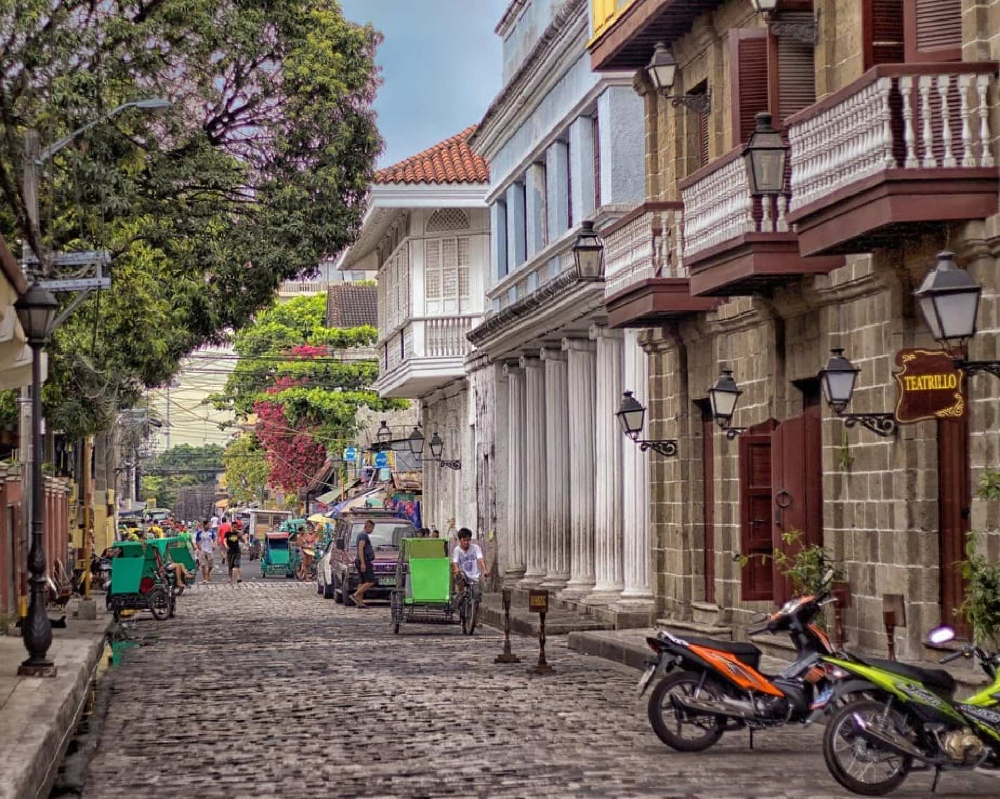
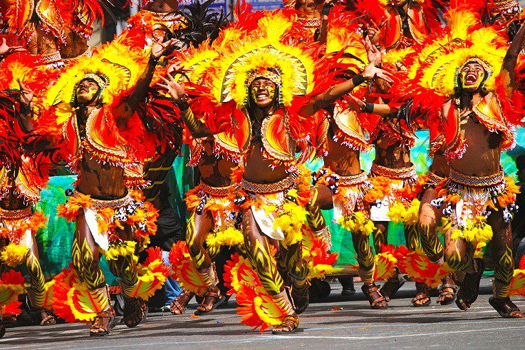

Snapshots of Manila



Rediscover the heart of the city — one spot at a time.
Your ultimate local guide to exploring Manila — from cultural sites and hidden gems to food spots and budget tips.
Explore Manila’s iconic landmarks and historical places.
ExploreDiscover secret spots, cafes, and hangout places locals love.
UncoverKnow when to visit — check weather, weekends vs weekdays & festivals.
CheckPlan your trip with budget tips and affordable local activities.
SaveYou can send us message regarding this website. We'd love to hear more from you!
MessageWelcome to Manila, the vibrant capital of the Philippines. Manila is a city where modern life intersects with centuries of rich history, offering a perfect blend of culture, commerce & beauty.
This website is designed to help locals navigate and explore Manila with ease. Whether you’re touring solo or with loved ones, find all the info you need for an unforgettable experience.
This site was made with locals in mind, to help us rediscover the hidden gems of Manila. Many of us have yet to fully explore our own city, and this platform encourages us to do so.
Explore the curated content covering Manila’s tourist spots, hidden gems, best times to visit, budget tips, and local eateries to enrich your travel experience.
The navigation bar at the top of the page allows you to easily explore the different sections of MY MANILA.
Here's a quick breakdown of the sections available:
Simply click on any of the navigation links above, and you’ll be directed to the section instantly. Whether you're planning a solo day trip or a weekend adventure with friends, MY MANILA makes navigating the city simple and enjoyable.
"I never knew there were so many hidden spots around Manila. This site helped me discover places I now love!"
"Perfect for weekend trips with barkada! Super helpful with the budget guide too."
"As someone who grew up here, I love that it’s made for locals, not tourists."